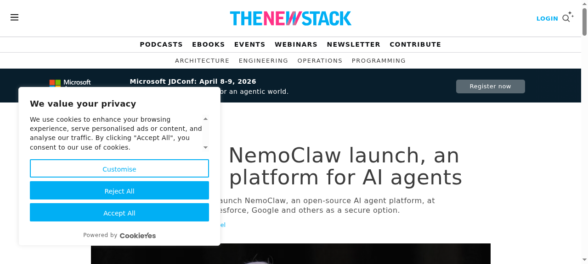

2026年03月23日
來源：MIT News、The New Stack、The Hacker News
中文版本：
English Version：

Anthropic 澄清其 Claude Code 政策的更新不會影響個人用戶使用訂閱帳號運行 OpenClaw、NanoClaw 等開源 Agent 工具。先前的文件更新引發社區討論，Anthropic 強調「 Nothing changes around how customers have been using their account」。
🔗 閱讀原文
NVIDIA 宣布推出 NemoClaw，這是一個開源平台，旨在幫助開發者構建和部署 AI Agents。該平台整合了 NVIDIA 的 GPU 加速技術，為企業級 AI 應用提供更強大的支援。
🔗 閱讀原文
OpenAI 推出 Codex Security AI 代理工具，掃描了 120 萬個代碼提交，發現 792 個關鍵漏洞和 10,561 個高嚴重性漏洞。這顯示 AI 在資安領域的應用正在快速發展。
🔗 閱讀原文
MIT 電腦科學學生設計 AI 聊天機器人，幫助年輕用戶變得更善於社交。這門新課程結合了人類學與 AI 技術，展示跨學科 AI 設計的潛力。
🔗 閱讀原文
MIT、Mass General Brigham 和哈佛醫學院的研究人員開發深度學習模型，可提前一年預測心臟衰竭患者的病情惡化。這是 AI 在醫療領域的重要應用案例。
🔗 閱讀原文